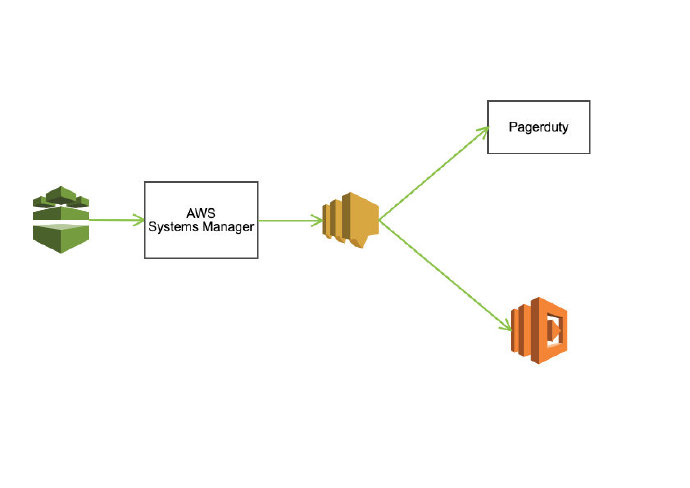
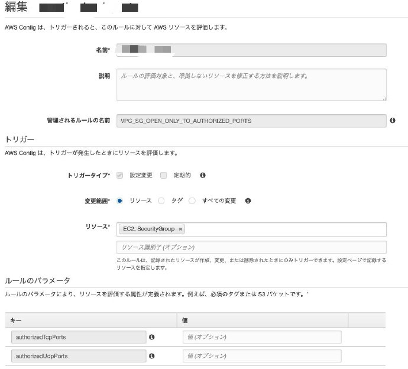
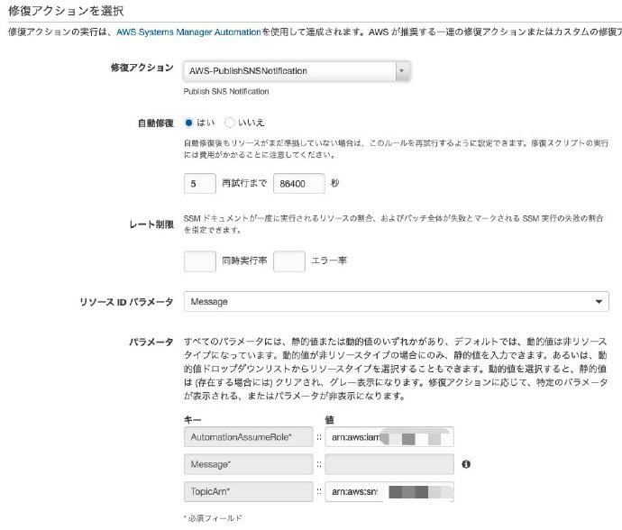

突然ですが、こんなお悩みがお持ちでしょうか。
- 社内developer共用のAWSアカウントを作って、クラウド知識を社内に布教しようと思った
- 勝手に全開放(ingress 0.0.0.0/0)のSecurityGroupが適用された
- 気づいたら、もうインターネットで天然のハニーポット扱い
こんなアナタに、今日の品物をオススメします！
機能紹介
- AWS Configを利用しSecurityGroupを常時監視し、ingressで0.0.0.0/0 allowのルールを検索
- 発見次第、SNS経由で発信
- 予め設置したlambda関数がトリガーされ、該当全開放ルールをリプレース
- インシデントマネジャーからアラート受信（オプション）

どうやって使うの？
基本は全部githubにあげて、READMEに記載しましたが、ちょっとだけ解説します。
セルフサービスの方は、下記リンクへどうぞ
Github repo
AWS Config
まず、Config機能を有効化し、EC2リソースにモニタリングできるように設定してください。（全リソースでも構いませんが、費用感が若干違う）
費用感
AWS Config料金
新料金プランになってから、だいぶ安くなりました。
LambdaFunctionも使い道よりますが、たいていは安価のイメージで、料金について、あんまり心配する必要がない風に考えています。
参考までに、月間 $5 前後の感じですかね。
AWS Config Rule
ルールを新規追加しましょう。
AWS提供のモノで大丈夫です、名前は「VPC_SG_OPEN_ONLY_TO_AUTHORIZED_PORTS」

AWS Config Rule 修復アクション
ここは、今回の肝ですね。
AWS提供の修復アクションはいろいろあって、中に「vpc-sg-open-only-to-authorized-ports」こいうものが使いそうだが、実際やってみました。
結果、駄目でしたー
何が駄目というと、デフォルトVPC以外のSecurityGroupには対応できないことです。
これじゃ監視の意味が薄いので、VPC関係なく対応してもらいたいですね。
ここは、やはり自前でlambda関数で対応する道を選びました。
ちょっと話が長くなたっが、ここで「PublishSNSNotification」という修復アクションを選択してください。
もちろん、それに合わせてIAMロールも準備してあげてくださいね。

修復アクションの実行履歴は、AWS SystemManagerで確認できます。
AWS SNS トピック
新規SNSトピックを作りましょう。
あとで、lambda関数とインシデントマネジャーをこちらのサブスクリプションに入れるような感じですね。
AWS Lambda Function
コードは以下となります。
ENVとして、authorized_global_ipv4を設定しましょう。(0.0.0.0/0にリプレースするIPに設定、例えばオフィス拠点のグローバルIP)
unauthorized_ipv4 は明示的に0.0.0.0/0を表明するためのもので、素直に0.0.0.0/0に設定してくださいね。
元々全VPC対応したいから自前でやるので、関数を非VPCにしてから、IAMはお任せしますね。
Runtime: Python3.6
1 | import os |
トリガーを先程作ったSNSトピックに設定し、テストに以下のようなモノを作りましょう。
1 | { |
テストのため、実際0.0.0.0/0のSecurityGroup（portはどうでもいいが、80,443でいいかなぁ）を作って、IDをとって、上記の「sg-XXXXX」に書き換えてください。
lambda関数のページで「テスト」を押したら、実行されるはずですね。
インシデントマネジャー(オプション)
今の所属会社はインシデント管理のため、Pagerdutyを使っています。
それのEMAILアドレスを上記SNSトピックにサブスクすれば、全開放のSecurityGroup IDが送信されます。
まとめ
ここまで終わりです。お疲れ様でした。
一回苦労すれば、後々は安心ですから、やる価値はあるかと思いますよー
じゃ今回もここまでにします。
またねー